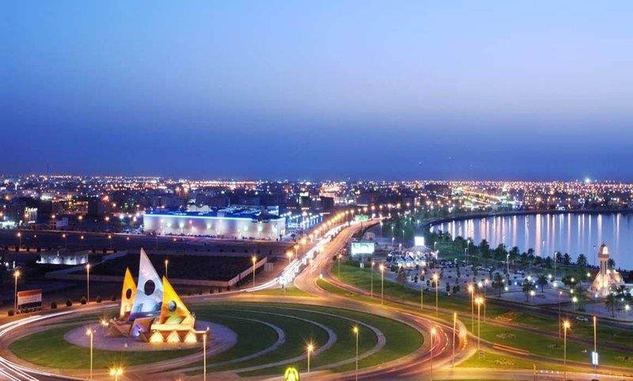

the most beautiful city in saudi arabia:
The Eastern Province (Arabic: المنطقة الشرقية al-Mintaqah ash-Sharqīyah), also known as the Eastern Region, and officially the Emirate of the Eastern Province,[1] is the easternmost of the 13 provinces of Saudi Arabia. It is the largest province by area
and the third most populous after the Riyadh Province and the Makkah Province. In 2017, the population was 4,900,325.[2] Of these, 3,140,362 were Saudi citizens and 1,759,963 were foreign nationals[3] The province accounts for 15.05% of the
entire population of Saudi Arabia[2] and is named for its geographical location relative to the rest of the kingdom.

More than a third of the population is concentrated in the Dammam metropolitan area. With an estimated population of 1.25 million as of 2019,[4] Dammam, the capital of the province, is the sixth most populous city in the kingdom. The incumbent governor
of the province is Prince Saud bin Nayef Al Saud. Other populous cities in the province include Hofuf, Mubarraz, Hafr al-Batin, Jubail and Khobar.[5] The region is extremely popular among tourists for its beaches on the Persian Gulf and proximity
to the other countries of the eastern Arab world, such as the United Arab Emirates and Bahrain, with the latter being linked to the province via the 25 km (15 mi) long King Fahd Causeway. The region also shares a border with Oman. The province
is bordered to the west, from north to south, by the provinces of the Northern Borders, Ha'il, Qassim, Riyadh and Najran.